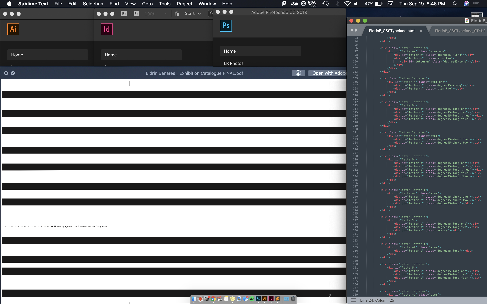

Using my laptop background and desktop icons, a minimal composition was created that best describes me. The screenshot below shows a stylized letter 'E', as it's the first letter of my name. It consists of desktop icons that create the letter 'E' and conform with the shape of the sand dune in the background.

Using opened windows, a composition was created that best describes me. The screenshot below shows applications I use frequently and images that I found interesting.
